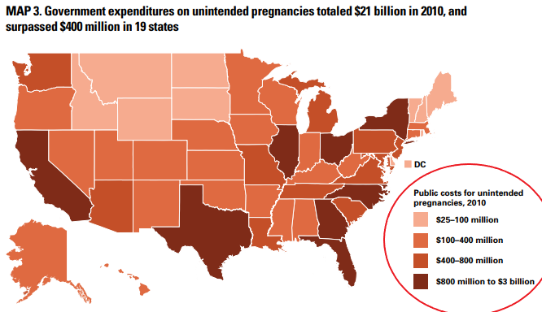
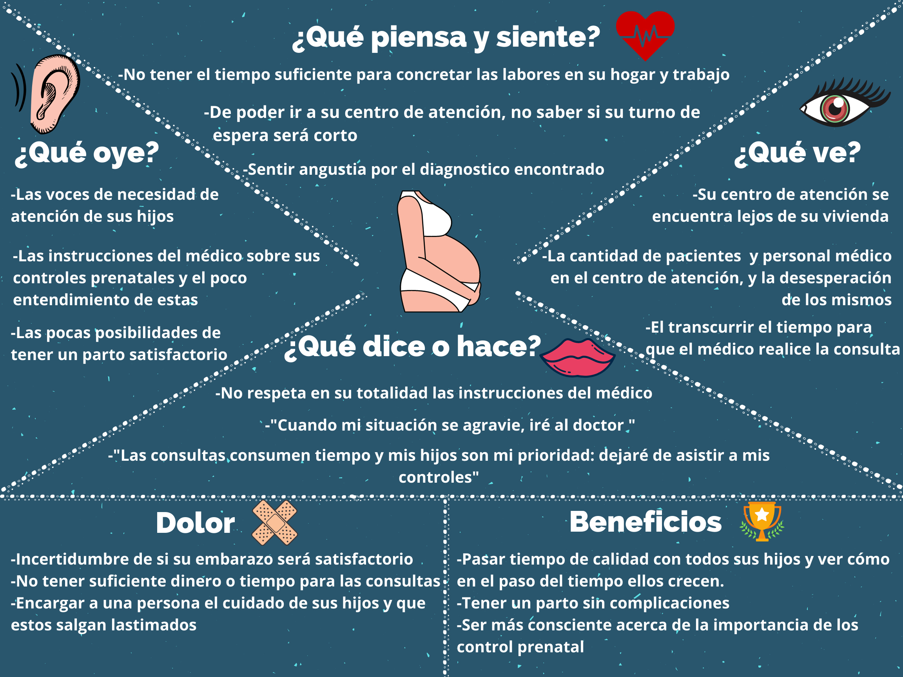

CONTEXTO SOCIAL
La mortalidad materna es un término estadístico que describe la muerte de una mujer durante el embarazo, el parto o posparto. Es considerada actualmente como un problema de salud pública y social, ya que está asociada a situaciones como pobreza, trabajo, analfabetismo, condiciones sanitarias ineficiente servicio médico o el poco acceso a instalaciones médicas para la gestante [1]. Afecta principalmente a países en vía de desarrollo como,por ejemplo; África subsahariana y Asia meridional representaron aproximadamente el 86% (254 000) de las muertes maternas mundiales estimadas en 2017. Solo África subsahariana representó aproximadamente dos tercios (196 000) de las muertes maternas, mientras que Asia meridional representó casi un quinto (58 000) según la OMS en el 2017 [2]. En el Perú, durante el 2019 fue de 309 en total y hasta la semana epidemiológica fuer de 249, donde se vio una disminución del 7,1% con respecto al año anterior [3]. Como se ve en la Tabla 1, las características de fallecimiento donde el mayor porcentaje fue de puerperio con 62,9% y con respecto al lugar de fallecimiento el 74,7% fue en el MINSA.
Aproximadamente 810 mujeres
murieron por causas evitables relacionadas con el embarazo y el parto en 2017. [1]
De 140 millones de partos,
la proporción atendida por personal sanitario calificado ha aumentado: del 58% en 1990 al 81% en 2019. [1]
En el Perú el 97,5%
de embarazos recibieron un control prenatal por personal calificado en el 2017. [2]
Tienen más de seis controles
un 88,9% de peruanas que es el mínimo de atenciones requeridas durante la gestación. [2]
Factores de abandono
Ocupacion Manual
Aquellas gestantes que trabajaban realizando trabajos manuales tenían menor proporción de visitas prenatales de 6 a más después del primer trimestre, estos trabajos se atribuían a bisutería, costuras, joyas, etc.
Dificultad para actividades doméstica
Las actividades para el cuidado del hogar hacen que la madre no cuente con tiempo para realizar sus controles.
Dificultad de permisos en el trabajo
Se ha visto en varios estudios como principal barrera de adherencia al control prenatal, se atribuye al aumento de trabajo informal en relación al trabajo regular por lo cual no permite o se dificulta a la gestante ir a sus controles prenatales.
Ambiente inapropiado para la gestante
Actualmente los establecimientos de salud del primer nivel están enfatizando en la mejora de la infraestructura para la buena atención de las gestantes.
Domicilio lejano
El hecho de que este lejos involucra un mayor tiempo y costo de transporte para llegar. Lo cual se ve más en las zonas rurales de nuestro país.
CONTEXTO INTERNACIONAL
En el mundo el porcentaje de embarazadas que reciben atención médica prenatal es del 86,737% según el Banco internacional. Los que tiene un menor porcentaje son países de África Subsahariana, como por ejemplo Somalia con un 26%. [4]Por ejemplo , en Colombia se realizó un estudio de 204 gestantes y se vio que que dos terceras partes de las gestantes inició el control prenatal entre las 10 y 20 semanas; un 23% lo realizó antes de la semana 10 y 10,8% de las pacientes lo inició después de las 20 semanas; 49,9% tuvo menos de 4 controles prenatales, mientras que 40,2%, entre 4 y 6 controles. Además, 9,3% realizó entre 7 y 10 controles y 0,5%, más de 10 controles. [5] En la presente imagen se describe el porcentaje de embrazadas que recibieron un controles prenatales, según los datos rescatados del Banco mundial del 2015. Se logra destacar que los países con un mayor porcentale estan en America y Asia.[6]
CONTEXTO NACIONAL
El abandono de controles prenatales o la nula asistencia a ellos , se podra reflejar en los cuadros presentados asi como algunos factores sociales que influyen en este problema.De acuerdo con la norma técnica del Ministerio de Salud, se tiene como meta que las mujeres gestantes, tengan: El primer control prenatal antes de las 16 semanas; y, Seis controles prenatales como mínimo durante todo el proceso de gestación .Sin embargo , una gran cantidad de población no llega a atenderse hasta seis controles, como en el caso de la paciente del caso clínico presentado.Presentaremos cuadros de la Encuesta Demográfica y de Salud Familiar (ENDES) del primer semestre del 2019 en relación a los controles prenatales. [4]
Mapa interactivo de distribución de muerte materna por región de procedencia 2020. [9]


Controles prenatales según área de residencia
Uno de los factores más destacados es el abandono o incorrecto monitoreo del control prenatal que está relacionado con el área de residencia. Como se ve en la Figura 1 quienes cuentan con un menor porcentaje son las mujeres que viven en las zonas rurales. Ya que en zonas alejadas no poseen un centro de salud adecuado, además de una baja disponibilidad de médicos. Según Minsa contamos con 12.8 médicos por cada 10 mil habitantes y, según Sinia (Sistema Nacional de Información Ambiental) los que tienen un porcentaje mayor, en el 2016, fueron Lima, Arequipa y Tacna por cada mil habitantes superando 3 por cada mil. Por lo que el conseguir una cita médica sea más difícil en zonas alejadas y el hecho de asistir conllevaría horas de espera. [6] [4]

Control prenatal en el primer trimestre de gestación por región natural
Uno de los factores que está involucrado en esta tabla es la falta de información o educación de la gestante, en la Figura2 se puede ver que el que tiene un mayor porcentaje es el de la costa, superando a la sierra y selva aproximadamente en un 6%. Según estudios de la Inei del 2018, quienes tienen una tasa de analfabetismo más alta son la de sierra y selva con 9.9% y 7.3% con respecto a la población total.[8] Además, otro factor que esta involucrado es el de domicilio lejano a un centro de salud.[4]

Seis o más controles prenatales por región natural
El mínimo de controles que se debe realizar una embrazada es seis, en la Figura 3 nos muestra dependiendo de la zona de residencia que la gran parte siguen con los controles. A pesar de que la costa muestra un mayor porcentaje a mujeres recibiendo su primer control con respecto a sierra y selva (Figura 1), también la cantidad de personas que siguen su control es la más elevada. Esto se puede relacionar al hecho del trabajo o donde reside. [4]
Referencias Bibliográficas
[1]"Mortalidad materna", Who.int, 2020.Disponible en:https://www.who.int/es/news-room/fact-sheets/detail/maternal-mortality
[2]J. Rodríguez Bendezú, "Factores de riesgo asociados al abandono de controles prenatales en gestantes del Hospital Ventanilla en el
periodo junio - octubre 2017.Disponible en: http://www.scielo.org.pe/scielo.php?pid=S1726-46342019000200003&script=sci_arttext"
[3].L. Tutal Muñoz, "Condiciones de acceso al programa de control prenatal en un centro de primer nivel de atención
de la Ciudad de Pasto, Colombia", Scielo Perú, 2020. .Disponible en: http://www.scielo.org.pe/scielo.php?script=sci_arttext&pid=S2304-51322019000200004
[4]"Perú: Indicador de Resultados de los Programas Presupuestales Primer Semestre 2019", Proyectos.inei.gob.pe, 2019.
Disponible en: .https://proyectos.inei.gob.pe/endes/2019/ppr/Indicadores_de_Resultados_de_los_Programas_Presupuestales_ENDES_Primer_Semestre_2019.pdf
[5]"Tasa de mortalidad materna (estimado mediante modelo, por cada 100.000 nacidos vivos) | Data", Datos.bancomundial.org, 2020.
Disponible en: https://datos.bancomundial.org/indicator/SH.STA.MMRT?end=2017&most_recent_value_desc=true&start=2000
[6]“Médicos por cada mil habitantes”, sinia. Disponible en: https://sinia.minam.gob.pe/indicador/982
[7]• “TASA DE ANALFABETISMO DE LA POBLACIÓN DE 15 Y MÁS AÑOS DE EDAD, SEGÚN ÁMBITO GEOGRÁFICO, 2008 - 2018” Inei.. Disponible en: https://www.inei.gob.pe/estadisticas/indice-tematico/educational-achievement/
[8]“Embrazadas que recibieron su primer control prenatal(%)”, Dato.bancomundial.org, 2016. . Disponible
en:https://datos.bancomundial.org/indicador/SH.STA.ANVC.ZS?view=map&year=2016
[9]M. Salud, ".: REUNIS :. Repositorio Único Nacional de Información en Salud - Ministerio de Salud", Minsa.gob.pe, 2020.
Disponible en: https://www.minsa.gob.pe/reunis/data/mortalidad_materna_cdc.asp
CONTEXTO ECONÓMICO
CONTEXTO INTERNACIONAL
En México el costo promedio en primer nivel de atención prenatal fue de US$139,78. Los departamentos más costosos fueron medicina familiar y laboratorio US$69,93 y US$32,73, respectivamente. [1]
Asimismo, los costos de hospitalización de mujeres con embarazos múltiples son en un promedio 40% mayor al resto tipos de embarazos. [2]
Como se ve en la siguiente tabla, los años AVP (Años de Vida Perdidos (AVP) ilustra la pérdida que sufre la sociedad como consecuencia de la muerte de personas jóvenes o de fallecimientos prematuros) para MM(Muerte Materna) fueron de 1,535.51, la media fue de 31.33 con MM, lo que equivale a $1,404, 72 por AVP. El grupo MM obtuvo 62% menos control prenatal que el grupo de SM(Sobrevida Materna) ($1,591.23 MM vs. $4,190.48 SM p<0.0001), la media de consultas de control prenatal fue de 2.8 ±3.5 con MM y 8.4± 4.9 con SM. La media del costo de la vía de resolución en el grupo con MM fue mayor que en las de SM ($8,114.92 ± $1,476.92 vs. $7,222.00 ± $959.81, p<0.0001). La media del costo de días de hospitalización en el grupo con MM fue mayor que en la de SM ($34,313.72 ± $59,419.72 vs. $2,037.14 ± $593.65, p<0.0006). El promedio de días de hospitalización fue de 8.67 ± 15.77 con MM y 2.21± 0.65 con SM. El costo total fue también mayor en el grupo MM ($44,019.86 ± $59,391.74 vs $13,449.62 ± $2,827.91, p<0.001).
El costo promedio unitario total en embarazadas con MM fue de $ 44,019.86 mientras que en embarazadas con SM fue de $13,449.62, representando lo anterior un aumento del 227% en el grupo con MM con respecto al de SM. [3]
Cuba: En la tabla 1 se aprecia que el costo de ingreso hospitalario en los embarazos múltiples de 30 días y más prácticamente duplicó el costo del ingreso hasta 29 días. [4]

Estados Unidos: Costos del sector público • En promedio, un parto financiado con fondos públicos cuesta $ 12,770 en atención prenatal, trabajo de parto y parto, atención posparto y los primeros 12 meses de cuidado infantil; cuidado durante los meses 13 a 60 cuesta, en promedio, otros $7,947, para un costo total por nacimiento de $ 20,716. • En 19 estados, los costos públicos relacionados con los embarazos no planeados excedieron los $ 400 millones (Mapa 3). Texas gasto la mayoría ($ 2.9 mil millones), seguida de California ($ 1.8 mil millones), Nueva York ($ 1.5 mil millones) y Florida ($ 1.3 mil millones). (son los cuatro estados más poblados de la nación). [5]

Los datos de la siguiente tabla muestran que la mortalidad materna en EE. UU. fue significativamente menor a la de chile y cuba, lo que esta fuertemente arraigado con el nivel de desarrollo económico y sanitario de esos países; en el 2000, el producto interno bruto de EE. UU., chile y cuba fue respectivamente de 34.637, 9.623 y 2.712 dólares internacionales, mientras que el gasto en salud per cápita fue respectivamente de 4.499, 697 y 186 dólares internacionales.[6]
CONTEXTO NACIONAL
En Perú, el mayor acceso de mujeres a servicios de atención prenatal es una estrategia importante para garantizar la salud de la madre y del recién nacido; sin embargo, existen grupos que no poseen los medios económicos necesarios para costear este tipo de servicios, como son los ciudadanos pertenecientes a los menores quintiles de riqueza.
No obstante, la “Tabla de porcentaje de gestantes que en último nacimiento en los 5 años antes de la encuesta recibió su primer control prenatal en el 1er trimestre de gestación, según característica seleccionada, 2014-2019 I semestre” [7], elaborada por el Instituto Nacional de Estadística e Informática (INEI), muestra lo contrario, ya que son los quintiles 4 y 5 (quintiles de mayor riqueza) quienes presentan el menor número de mujeres que recibieron atenciones prenatales para el primer semestre del año 2019; asimismo, según datos recopilados por el INEI en el año 2018, estos quintiles poseen un ingreso real Per Cápita promedio mensual de 1103 y 2403 soles, respectivamente.[8] Por otro lado, el porcentaje del primer control prenatal en el 2019 con un 80.7% se redujo en un 0.8% con respecto a los años 2017 y 2018, ambos años con un 81.5%.
Cantidad de mujeres que recibieron su primer control prenatal según quintiles de riqueza[8]
Quintil inferior
Segundo quintil
Quintil intermedio
Cuarto quintil
Quinto superior
En adición, el presente cuadro realizado por Essalud en el año 2015 muestra algunos de los costos de atención y servicios para controles prenatales de Essalud: [9]
Costo de paquete obstetrico por cesarea

Costo de paquete obstetrico por parto natural

Referencias Bibliográficas
[1] E. Villarreal, M. Garza, G. Núñez, S. Rodríguez, O. Rodríguez (2007).”COSTO DE LA ATENCIÓN PRENATAL: INSTITUTO MEXICANO DEL SEGURO SOCIAL''.[En línea] Revista chilena de obstetricia y ginecología. Disponible en:https://scielo.conicyt.cl/scielo.php?script=sci_arttext&pid=S0717-75262007000500004
[2] Instituto Mexicano del Seguro Social.”Diagnóstico y manejo del Embarazo múltiple".(s.f.)[En línea] IMSS. Disponible en:http://www.imss.gob.mx/sites/all/statics/guiasclinicas/628GRR.pdf
[3] A. Marlen, J. Gutiérrez, J. Herrera, E. Ibarra, M. López, H. Mendieta.” Costo de la Atención Hospitalaria y Años de Vida Perdidos por la Muerte Materna”.Abril. 2018. [En línea] Revista Salud y administración. Disponible en:http://www.unsis.edu.mx/revista/doc/vol5num13/3_Muerte_Materna.pdf
[4] J. Cabrera, J. Hernández, I. Díaz y R. Suárez.” Costos y beneficios del ingreso del embarazo múltiple”.Mayo. 2003. [En línea] Revista Cubana de Obstetricia y Ginecología. Disponible en:http://scielo.sld.cu/scielo.php?pid=S0138-600X2003000200006&script=sci_arttext&tlng=en
[5] A. Sonfield y K. Kost.(Febrero 2015).” Public Costs From Unintended Pregnancies And The Role Of Public Insurance Programs In Paying For Pregnancy-Related Care” . [En linea] Citeseerx.ist.psu.edu. Disponible en:http://citeseerx.ist.psu.edu/viewdoc/download?doi=10.1.1.700.5575&rep=rep1&type=pdf
[6] E. Donoso y E. Oyarzún (2014).” Análisis comparativo de la mortalidad materna en chile, cuba y estados unidos de norteamérica”. [En línea] Revista chilena de obstetricia y ginecología. Disponible en:https://scielo.conicyt.cl/pdf/rchog/v69n1/art04.pdf
[7] Instituto Nacional de Estadísitca e Informática (2019, agosto). "Perú: indicadores de resultados de los programas resupuestales, primer semestre 2019". [en línea]. Disponible en: https://proyectos.inei.gob.pe/endes/2019/ppr/Indicadores_de_Resultados_de_los_Programas_Presupuestales_ENDES_Primer_Semestre_2019.pdf
[8] Instituto Nacional de Estadísitca e Informática (2019, abril). "Resultados de la pobreza monetaria 2018". [en línea]. Disponible en: https://www.inei.gob.pe/media/cifras_de_pobreza/exposicion_evolucion-de-pobreza-monetaria-2018.pdf
[9] Seguro Social de Salud - Essalud (2015). "Convenio de recuperación interinstitucional entre el Seguro Social de Salud - Essalud y El Hogar de la Madre clínica hospital "Rosalía de Lavalle de Morales Macedo". [en línea]. Disponible en: http://www.essalud.gob.pe/downloads/convenios_suscritos/hogar_de_la_madre.pdf
DESCRIPCIÓN DEL PROBLEMA
IDENTIFICACIÓN DEL PROBLEMA
Presentaremos dos mapas y un diagrama que nos permitieron identificar el problema principal de caso clínico presentado.
Mapa de empatía

Fuente: Elaboración del grupo.
Mapa de viaje del cliente

Fuente: Elaboración del grupo.
Diagrama Causa - Efecto
Fuente: Elaboración del grupo.
Definición del Problema
Mediante los diagramas presentados pudimos llegar a la conclusión que el problema principal del caso clínico presentado es el abandono del control prenatal, lo cual no permite un correcto monitoreo de la paciente de embarazo gemelar con secuencia perfusión arterial reversa. El control prenatal es una herramienta de prevención de la morbilidad y la mortalidad materna y perinatal, pero sigue teniendo problemas en su cobertura y calidad. Estos controles son el eje inicial para la adecuada atención materna, conjuntamente con el parto institucional y el seguimiento del recién nacido, constituyendo una buena estrategia de reducción de la mortalidad materna. Por esto, el abandono al control prenatal no solo lleva a la no asistencia del parto institucional, sino también interrumpe las actividades preventivas y de promoción de la salud, porque limita los contactos entre el profesional de la salud. Se estima que por cada muerte materna ocurren 10 muertes perinatales; las cuales están vinculadas, a factores de salud materna y a la inadecuada atención prenatal, del parto y del recién nacido, teniendo como resultado casos de bajo peso al nacer, 8 prematuros, asfixia neonatal, entre otras complicaciones. [1]
El problema a tratar es el abandono del control prenatal por falta de accesibilidad de los pacientes a centros médicos .El objetivo principal de nuestro dispositivo será que los pacientes puedan realizar sus controles de manera remota .
Referencias Bibliográficas
[1] O. Munares-García (2013, agosto). “Factores asociados al abandono al control prenatal en un hospital del Ministerio de Salud Perú”. [en línea]. Disponible en: https://www.redalyc.org/pdf/2031/203129458007.pdf